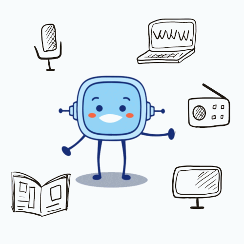
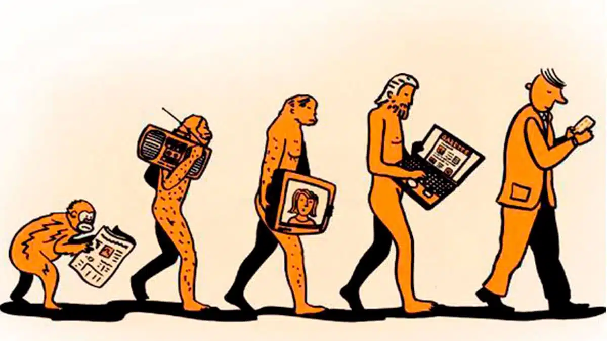

Medios de comunicación :D

Evolución de los medios de
Con el avance de la tecnología se han creado diferentes medios por el cual podemos interactuar con otras personas, pero esto es el resultado de un largo camino en donde la forma de comunicarnos ha ido evolucionando constantemente.
La primera etapa fue probablemente la era de signos y señales que se desarrolló en los inicios de la prehistoria. Hace 5000 años se produjo la transformación hacia la era de la escritura la que fue primordial en el avance de la raza humana.
Un gran logro que se realizó fue en el siglo XV con la aparición de imprentas para manuscritos, Johann Gutemberg después de varios intentos descubrió una forma de representar los caracteres en una imprenta.
Del siglo XVII al siglo XIX se produjo un auge en cuanto al periódico y a la forma de transmitir noticias especialmente locales, como fueron el telégrafo por cable, telégrafo sin hilos.
Del siglo XX a la actualidad se fueron creando diferentes formas de comunicar, se creó la radio, la primera transmisión televisiva, satélites comunicacionales etc. Y con los avances en tecnología y electrónica llegamos a lo que tenemos hoy en día, celulares, internet, chat, correos etc.
La evolución de los medios de comunicación ha sido un aspecto crucial de la historia de la humanidad, transformando la forma en que las personas interactúan, intercambian ideas y acceden a la información. Desde las civilizaciones antiguas hasta las tecnologías modernas, los medios de comunicación han experimentado cambios significativos, dando forma a la sociedad e influyendo en las normas culturales.
A continuación se presenta una descripción general de los principales hitos en la evolución de los medios de comunicación:
1. Comunicación oral : la primera forma de comunicación, la comunicación oral, implicaba la interacción cara a cara entre individuos. Este método prevalecía en civilizaciones antiguas, como Grecia y Roma, donde hablar en público y contar historias eran habilidades esenciales para líderes y ancianos.
2. Comunicación escrita : El desarrollo de los sistemas de escritura revolucionó la comunicación al permitir a las personas registrar y transmitir información a través de distancias. La invención del papel y la tinta en la antigua China y Egipto facilitó la difusión de la comunicación escrita, facilitando la documentación y el intercambio de conocimientos.
3. Medios impresos : La invención de la imprenta en el siglo XV permitió la producción en masa de materiales escritos, lo que llevó a la proliferación de libros, periódicos y folletos. Los medios impresos desempeñaron un papel vital en la difusión de información durante los períodos del Renacimiento y la Ilustración
4. Comunicación Electrónica : La invención del telégrafo en el siglo XIX marcó el inicio de la comunicación electrónica. Posteriormente, el desarrollo de la radio, la televisión y el teléfono transformó la forma en que la gente se comunica, especialmente después de la Segunda Guerra Mundial. 5. Comunicación digital : La llegada de Internet y las tecnologías digitales en la segunda mitad del siglo XX ha alterado significativamente los patrones de comunicación. Las plataformas de comunicación digital como el correo electrónico, las redes sociales y la mensajería instantánea se han vuelto omnipresentes, lo que permite a las personas conectarse con otras en todo el mundo. 6. Comunicación móvil : la adopción generalizada de dispositivos móviles ha transformado aún más la comunicación, permitiendo a las personas mantenerse conectadas mientras viajan. Los teléfonos móviles se han convertido en una herramienta esencial para la comunicación personal y profesional, y los teléfonos inteligentes ofrecen una variedad de aplicaciones y funciones. 7. Realidad virtual y realidad aumentada : los avances recientes en las tecnologías de realidad virtual y aumentada han abierto nuevas posibilidades para experiencias de comunicación inmersivas. Estas tecnologías tienen aplicaciones potenciales en campos como la educación, el entretenimiento y la atención médica.
